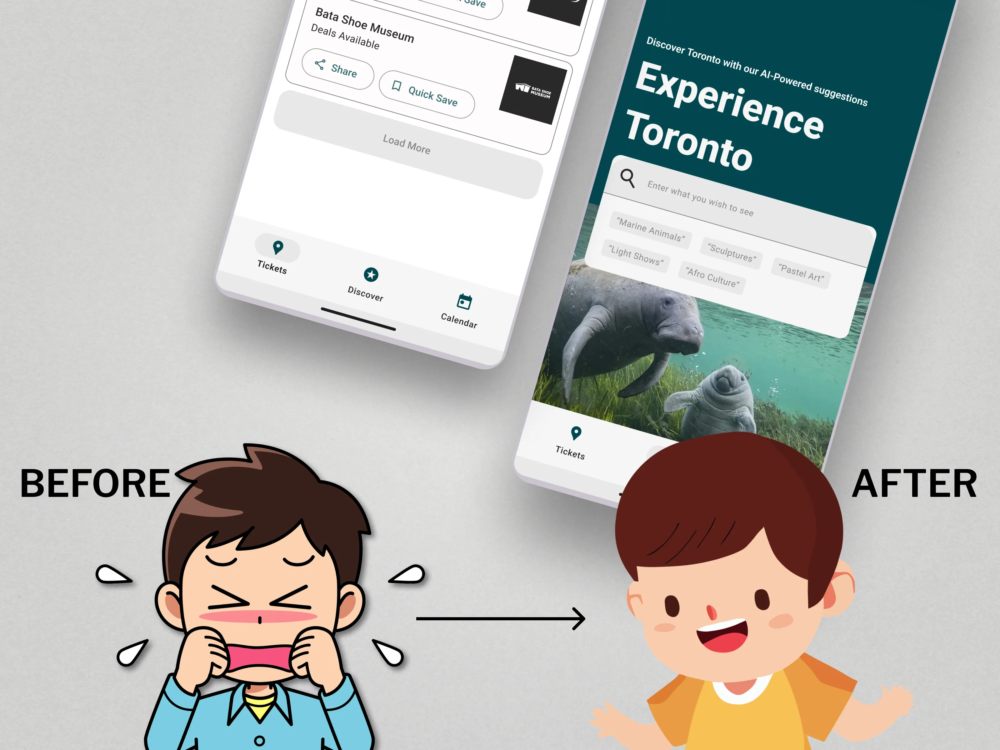

👋 I'm

a UX/Product Designer and strategist
driving fintech and digital innovation.
Seeking Hybrid/WFO Canada & Remote Global Roles
Based in 📍 Toronto, ON, Canada
3+ years designing impactful digital solutions in Fintech, Advertising, and Healthcare
Master of Information (UXD) @ iSchool, University of Toronto
and Masters in Electronic Media @ Anna University, Chennai
My Work
June 2024 – March 2025 • Web Content · UI/UX · WordPress
Website Production – ECE, University of Toronto
Redesigned, updated, and maintained the ECE Department website and intranet, including multiple key pages, content migration, component updates, and the homepage redesign as a detailed showcase of modular, student-focused design.
Implemented July 2023 • 12 Weeks • Service Design · Gen AI
Service Design for Film: AI-Assisted Video Creation
Designed and validated a scalable, AI-assisted workflow for film concept videos, enabling directors to visualize ideas quickly while improving alignment and creating a reusable process for future projects.

Presented Oct–Dec 2023 • UX Research · Mobile Product Design
UX Research & Mobile App Design: Museum Ticket Deals
Conducted research to design a mobile-first platform to centralize museum ticket deals. Conducted UX research, created personas, and developed high-fidelity UI screens.
What makes Karthik special?
I love to turn research data to insights to actionable design strategies that create tangible business value. My work always makes information accessible and usable for clients and end-users alike, and improves organizational outcomes. I also help perfect or introduce workflows, including the use of AI-tools / GenAI, to optimize product delivery and internal team efficiency.
With a Master of Information (User Experience Design) from the University of Toronto and 3+ years of experience designing for enterprise and SaaS platforms, my focus is on improving usability and driving user engagement through cross-functional collaboration.
Want to see more?
Presented Aug 2021 • Client Project • Web Design · Interactive UI · Creative Strategy
Pitch Deck Website for Film Pre-Production
Turning a traditional presentation into a cinematic web experience. Password-protected, interactive website with seamless visuals, music, and transitions.
Presented Dec 2024 • Interdepartmental Academic • UX · Research · Business Process Modeling
Education Technology Business Plan: Note4U
Delivered a business plan for an AI-powered product that will aid music education.
Presented Dec 2023 • Academic Project • UX Research · IA Design · Academic Project
IA Redesign & Navigation Strategy
Phased testing strategy for the Textile Museum of Canada to improve IA and menu usability. Research-driven approach balancing user needs and stakeholder goals.
Graphic Design
Portfolio of designs across retail goods, sporting goods, fashion, healthcare, podcasts, advertising, feature films, and TV shows.